A model-agnostic framework that decouples task optimization from explanation coordination. Faithful, consistent explanations across heterogeneous clients with kilobytes of communication and zero exposure of raw data or gradients.
Train task models normally. Coordinate explanations separately in a tiny probability space, using secure aggregation, differential privacy, and a robust global prior that never touches the task gradient.
Federated learning enables on-device training without centralizing data, yet existing systems still struggle to provide explanations that are both locally faithful and globally consistent under strict privacy and bandwidth constraints. Prior approaches either keep explanations siloed across clients, transmit heavy or sensitive artifacts, or replace expressive task models with interpretable surrogates that sacrifice accuracy.
We propose xFedAlign, a model-agnostic framework that decouples task optimization in parameter space from explanation coordination in a compact group space. Each client distills a lightweight surrogate that produces private, per-class top-k attribution artifacts, which are robustly aggregated by the server into a Global Explanation Prior that softly aligns client explanations without constraining task learning. Across image, text, and tabular benchmarks with IID and non-IID partitions, xFedAlign matches FedAvg accuracy while consistently reducing explanation drift and improving deletion and insertion AUC, with only a few kilobytes of additional communication per round.
Task optimization lives in parameter space. Explanation coordination lives in a low-dimensional probability simplex over a shared group space. The two run in parallel, communicate only through a soft alignment penalty, and exchange just kilobytes per round.
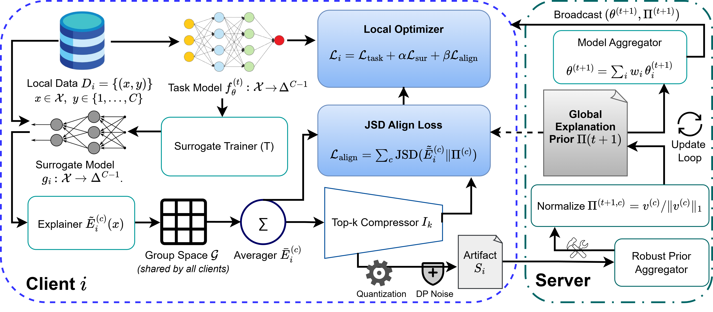
A compact \(g_i\) mimics \(f_\theta\) via temperature-based KL distillation and produces calibrated, group-level attributions on the simplex.
Dense summaries become top-\(k\), clipped, 8-bit quantized, and Gaussian-noised. Secure aggregation completes the per-round \((\varepsilon, \delta)\)-DP guarantee.
The server forms \(\Pi^{(c)}\) by coordinate-wise median over reported artifacts. Outliers and malicious contributions are absorbed; minority structure is preserved.
Clients minimize \(\mathcal{L}_{\text{task}} + \alpha\,\mathcal{L}_{\text{sur}} + \beta\,\mathrm{JSD}(\bar{E}_i \parallel \Pi)\). Alignment lives in the simplex and never reaches \(\theta\), so accuracy is preserved.
A snapshot of the tradeoff. xFedAlign tracks FedAvg on accuracy while cutting cross-client explanation drift and adding only kilobytes of communication.
On MNIST under non-IID heterogeneity, baselines spread attribution mass off the digit support, smear it across broad blobs, or hallucinate unrelated activations. xFedAlign produces sparse, well-localized saliency that traces the actual stroke geometry.
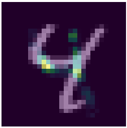
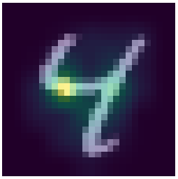
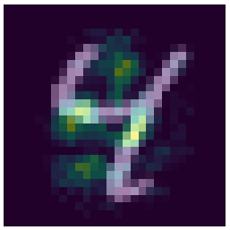
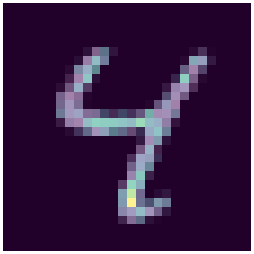
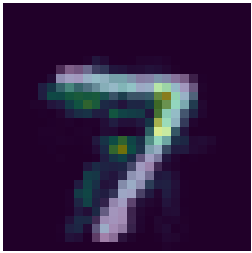
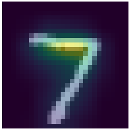
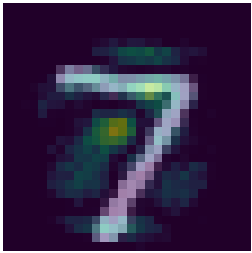
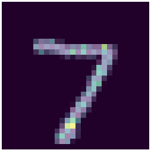
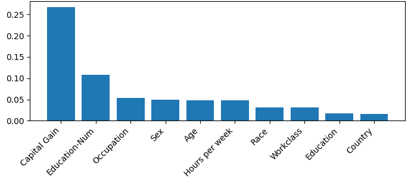
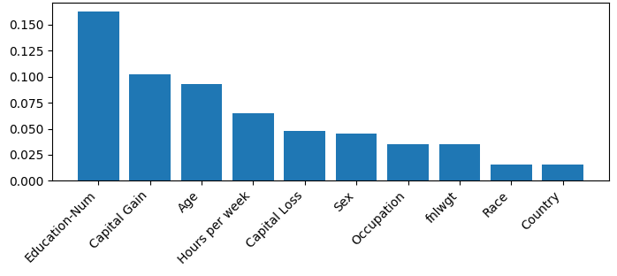
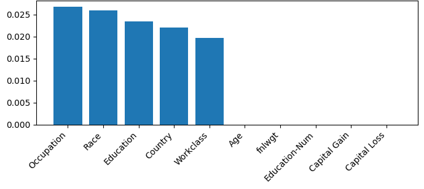
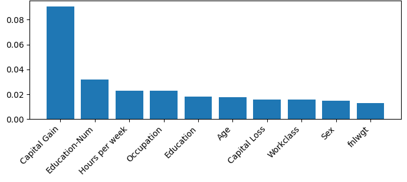
On a representative UCI Adult test point, baselines spread mass across loosely related attributes or under-weight the actual income signals. xFedAlign concentrates on a compact set of socio-economic indicators: capital gain and education-num clearly dominant, followed by hours-per-week, occupation, and age. Sex and country fall to the tail, aligning with domain knowledge for income prediction.
Across modalities and partitions, xFedAlign tracks FedAvg on accuracy while consistently reducing explanation drift and improving perturbation-based fidelity. Selected results under non-IID Dirichlet \((\alpha = 0.1)\) heterogeneity, five seeds.
| Method | Accuracy ↑ | EDI ↓ | Del AUC ↓ | Ins AUC ↑ |
|---|---|---|---|---|
| MNIST · non-IID | ||||
| FedAvg | 0.930 | · | · | · |
| Local-XAI | 0.927 | 0.110 | 0.337 | 0.737 |
| FedAttr-Agg | 0.930 | 0.159 | 0.288 | 0.747 |
| Fed-XAI | 0.449 | 0.300 | 0.126 | 0.425 |
| xFedAlign | 0.930 | 0.076 | 0.170 | 0.843 |
| AG News · non-IID | ||||
| FedAvg | 0.707 | · | · | · |
| Local-XAI | 0.706 | 0.263 | 0.282 | 0.748 |
| FedAttr-Agg | 0.706 | 0.416 | 0.280 | 0.743 |
| Fed-XAI | 0.593 | 0.211 | 0.268 | 0.552 |
| xFedAlign | 0.710 | 0.166 | 0.263 | 0.735 |
| MRI Alzheimer's · non-IID (real-world) | ||||
| FedAvg | 0.464 | · | · | · |
| Local-XAI | 0.696 | 0.048 | 0.356 | 0.481 |
| Fed-XAI | 0.357 | 0.134 | 0.154 | 0.443 |
| xFedAlign | 0.779 | 0.002 | 0.336 | 0.686 |
xFedAlign (ours) Lower is better for EDI and Deletion AUC. Higher is better for Accuracy and Insertion AUC. Full results across six benchmarks and IID settings are in the paper.
Transmitting only lightly noised top-k artifacts under secure aggregation, then median-fusing them into the prior, yields the lowest membership inference accuracy across all methods and the smallest degradation under attribution poisoning.
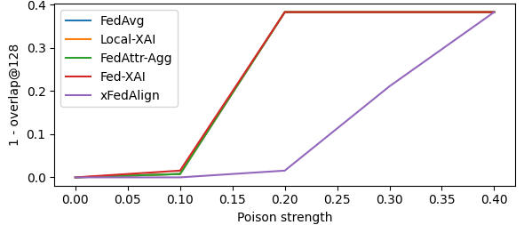
At a 20% poisoning ratio every baseline jumps to a 0.38 shift, while xFedAlign stays near zero. The crossover happens almost a full ρ later.
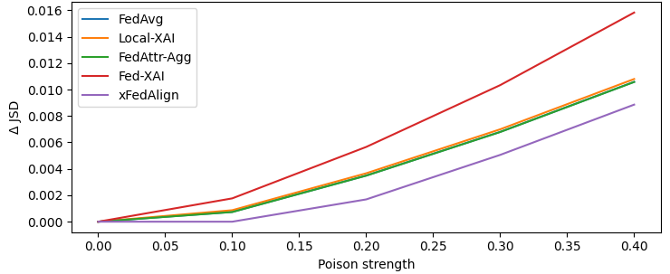
Drift induced by malicious clients rises sub-linearly for xFedAlign and remains strictly below every baseline across all attack strengths.
Membership inference accuracy on MNIST IID, the lowest among all evaluated methods. The advantage over a random guesser is just 0.004, validating that explanation alignment can be both useful and private.
Paper to appear in the Proceedings of the 43rd International Conference on Machine Learning, Seoul, South Korea, 2026.
This work was supported in part by the National Science Foundation under Award No. 2107450 and by the Army Research Office under Grant No. W911NF-24-2-0241.